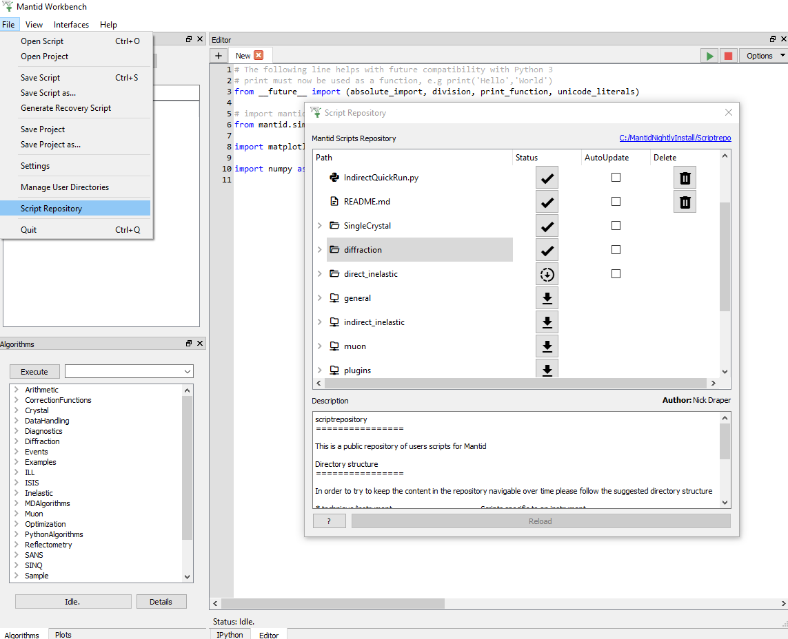
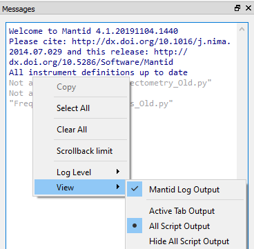
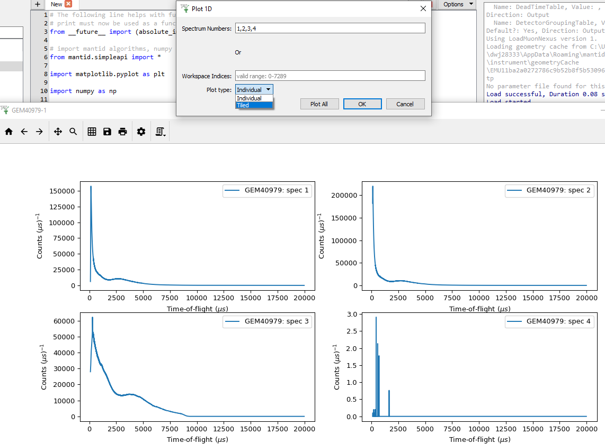
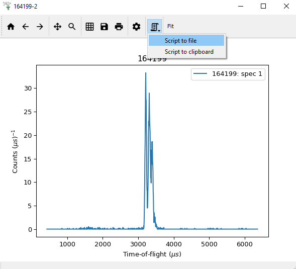
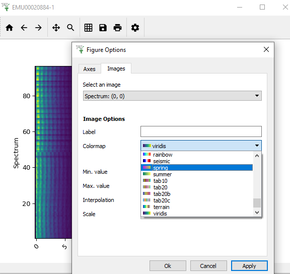
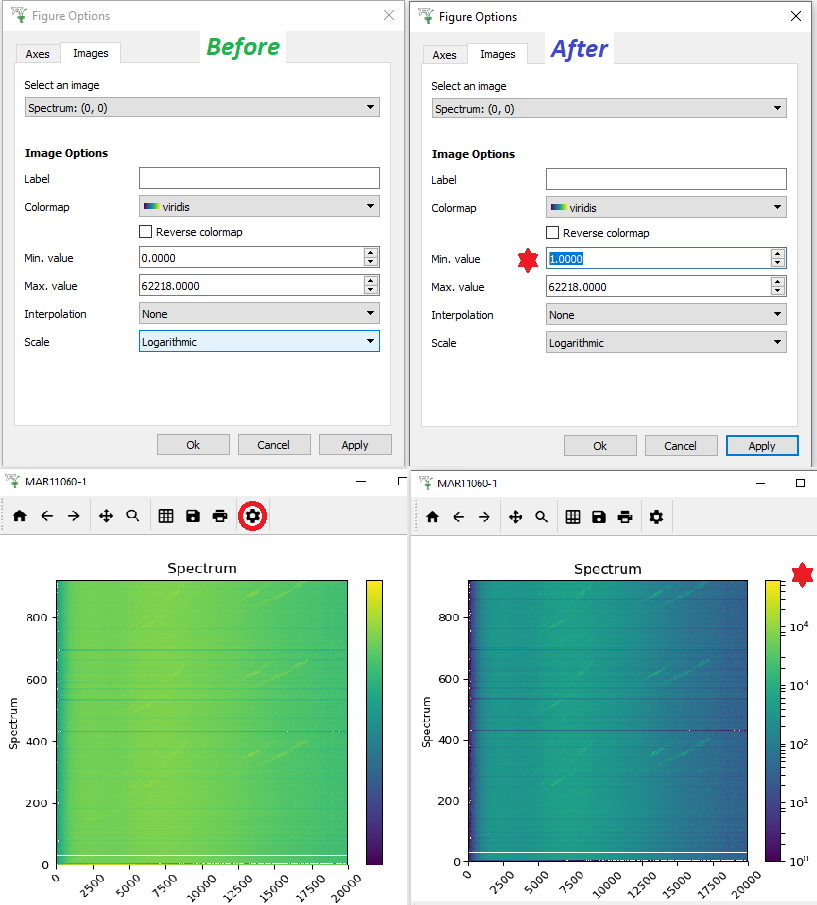

MantidWorkbench Changes#
{kind=link}

Improvements#
User Interface#
* The Script Repository - Download from ‘File > Script’ Repository to a folder of your choice! *
‘File > Generate Recovery Script’, essentially generates a Project Recovery script. It does NOT include Workspace Clean-Up or other features of Project Recovery.
“Show Detectors” - Right-click a workspace and select “Show Detectors”. This creates a table workspace with detector information relevant to the workspace.
Error Reporter text entry and information made more user friendly.
Clearer icons in SliceViewer and Plot Toolbars.
Marker Label, Color and Line Style can be edited on a per-marker basis.
Figure Options now has a Legend tab so that a plot’s legend can be customised.
Project Save and Load will no longer freeze when processing large amounts of workspaces and/or interfaces.
Saving files larger than 10GB produces a pop-up to inform it may take a long time and gives the opportunity to cancel.
Fit-Result Workspaces are now accessible from the Fitting Interface.
Opening >1 instance of an interface is now disallowed, as was the case in MantidPlot.
The Help [?] Button in Manage User Directories has been restored.
It is now possible to fit Table Workspaces in the Fit Browser and in a script.
{kind=link}

Scripting#
- New keyboard shortcuts:
Ctrl+ (Ctrl-) increases (decreases) font size in the script editor.
Ctrl+N opens a new tab in the script editor.
Ctrl+D aborts a running script
The auto-complete in Workbench’s script editor has been improved.
* “View” option, allowing you to filter Messages output by script - Right-click in the Messages Display and hover over “View” to see the options. *
{kind=link}

Tiled Plots in Workbench!!!#
{kind=link}

{kind=link}

Plotting#
* Added basic Tiled plots. *
Changing the Axes’ scale, by Right-clicking on a figure with multiple plots, changes only the plot that was clicked on.
Spectrum Label included in Legend (instead of Spectrum Number) if provided
Plotting Dialog uses Spectrum Number by default.
Home Button on Plot Windows now always centres the figure’s contents.
Forward and Back Arrows on Plot Windows to navigate Zoom levels.
* “Generate Script” Button on Plot Window to produce a script to re-create the current figure. *
You can now zoom in/out on figures by scrolling and pan figures using the middle mouse button.
The X value headers on data display now shows values to 4 decimal places.
Plot Windows stay on top of Workbench’s main window, so you can easily Drag and Drop workspaces onto existing figures.
Draggable horizontal and vertical markers can be inserted into plots.
* Colormap Icons - In a Plot Window open Figure Options (Gear Icon), under Images>Colormap shows Colormap Icons beside names. *
Hex Codes can be input into the Color Selectors in Figure Options.
Scientific Notation can be used to input Axis Limits in the Figure Options.
Sub-tabs in the Curves tab in Figure Options on plots now contain “Apply to All” buttons. It copies the current curve’s properties to all others in the plot.
Bugfixes#
Pressing the tab key while in the axis quick editor now selects each input field in the correct order.
Clicking Cancel after attempting to save a project upon closing now keeps Workbench open instead of closing without saving.
Dialog windows no longer contain a useless help [?] button in their title bar.
Instrument view now keeps the saved rendering option when loading projects.
Fixes an issue where choosing to not overwrite an existing project when attempting to save upon closing would cause Workbench to close without saving.
Fit results on normalised plots are now also normalised to match the plot.
A crash in the Fit Browser when the default peak was not a registered peak type has been fixed.
Fixed an issue where you could not edit table workspaces to enter negative numbers.
The data display will now update automatically when deleting a column in a table workspace.
The colorbar in the colorfill plot window now correctly resizes when the scale is changed by double-clicking on the colorbar axis.
Fixes an issue in the Slice Viewer where changing the colormap, min value, or max value via the figure options would not update the scale.
Fixes an issue where changing the curve properties in the figure options menu would reset the plot’s axes scales.
Fixed an issue with fitting where the difference would be plotted even if the Plot Difference option in the fit property browser was not enabled.
Fixed an issue where the plot legend would no longer be movable after removing a plot guess.
The fitting curves in the plot are now deleted when the fit results workspaces are deleted.
An error is no longer raised when attempting to open plot options, or the fitting tab, on a figure containing a line plotted using a script without a spectrum number being specified.
Sequential fit now updates parameters in fit browser and plots them
Imports from the __future__ module now have the expected effect in scripts. E.g. after importing
print_function,print("A", "B")will output “A B” instead of “('A', 'B')”.Tabs in the script editor no longer change order when Workbench is closed and reopened.
Fixes an issue where subscribing a new algorithm duplicates the list of algorithms in the algorithm selector widget.
Plots are no longer zoomed out along their y-axis when you perform a fit or do a plot guess.
You can now save scripts that contain unicode characters.
A crash no longer occurs when the GenerateEventsFilter algorithm fails in the Filter Events Interface
Workspaces contained within groups are no longer duplicated when saving a project.
The button to “Remove” a curve in Figure Options is now the same size as the drop-down list of curves.
“MantidPlot” in window titles have been removed.
If multiple plots of the same workspace are open, the fit property browser will change the default output name so any output workspaces are not overridden.
When showing the data table for a sqw workspace the vertical header now shows the bin center value and unit.
Fixes an issue where opening any help menu after previously opening the help menu in the Manage User Directories window would crash Workbench.
Known Issues#
Changing the scale of a Colorbar to Logarithmic may result in no tick labels being added. This is an issue with how matplotlib tries to deal with a Min Colorbar value of 0. Hopefully we will find a way around this for a future release. For now, in Figure Options (Gear Icon on a Colorfill plot), under the Images Tab, change the Min value to 1 or a small positive value. The logarithmic tick marks should now appear and the Min and Max values can be altered appropriately to produce the best plot for the data. See the Images below for an example of before and after this change:
{kind=link}

Before: Min is 0 and no Colorbar Tick Marks; After: Min is changed to 1 snf Colorbar Tick Marks Appear!!!#
* See associated Image *